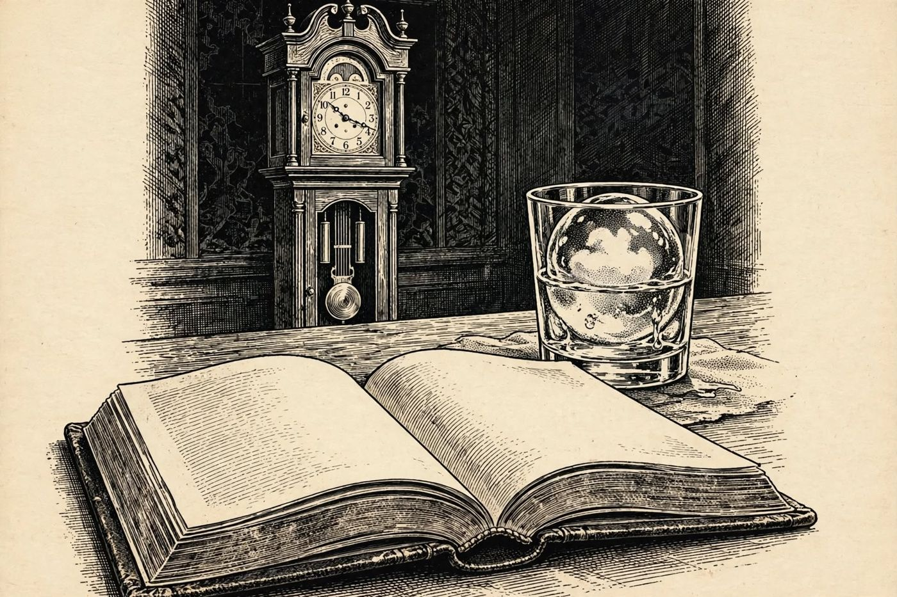

14 de diciembre
La esfera que se derrite
Libro · págs. 60-63
Audio del día
Transcripción
«Mire esta foto ampliada, detective… Esta es la bandeja L, la bandeja de caucho negro para el Old Fashioned del señor Lombard. Él no aceptaba un hielo que no fuera perfectamente cristalino. Pero en la foto que hizo Julian esa noche, mire la esfera: hay una nube turbia en el centro. Mi hielo sale transparente, jamás con nube. Y la noche del treinta, la cinta de la L estaba un poco torcida; yo siempre la pego recta. Reconstruya mi ritual paso a paso, en el orden exacto, y verá dónde se esconde la trampa.»

Intenta resolverlo primero. Abre solo lo que necesites, en este orden.
1Pista sutil
Utiliza las condiciones fijas: la regla a) obliga a empezar por anotar la comanda (5), mientras que la regla h) exige finalizar sirviendo la bebida con la piel de naranja (4).
2Comprobación parcial
Los tres primeros pasos de la secuencia son: 5 (Anotar comanda), 2 (Enfriar vaso) y 8 (Disolver azúcar).
3Pista fuerte
Con las reglas b), c) y d) se ordenan enfriar el vaso, disolver el azúcar, servir el bourbon y sacar la bandeja, en ese orden. Después, e) pega «devolver» justo detrás de «desmoldar», y g) coloca la esfera en la posición 7.
4Solución oficialSpoiler si no lo has intentado
Secuencia de pasos ordenados:
Anotar comanda (5)
Enfriar vaso (2)
Disolver azúcar (8)
Servir bourbon (1)
Sacar bandeja y desmoldar (6)
Devolver bandeja al arcón frigorífico (3)
Deslizar esfera en el vaso (7)
Piel de naranja y servir (4)
Para el desenlace de la historia, vuelve al libro: la sección de soluciones está al final.